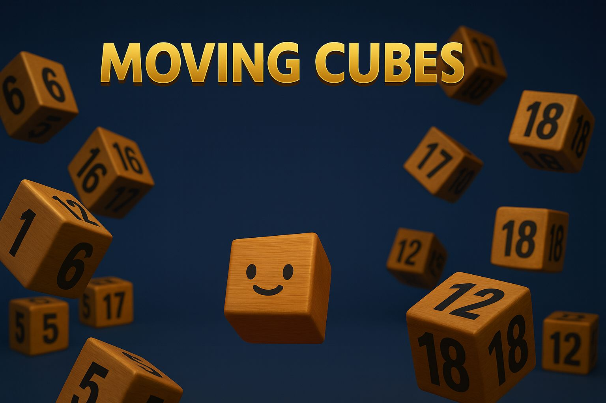

Moving Cubes
עומר כהן ויערה יצחקי
משחק מחשב תלת-ממדי שפותח ב-Unity, המציג לוגיקת תנועה מתקדמת, ניהול סביבה ואינטראקציית משתמש.
מחלקת מדעי המחשב · גלריית פרויקטי סטודנטים
// ── Recursive Binary Search ───────── int bsearch(int* arr, int lo, int hi, int key) { if (lo > hi) return -1; int mid = lo + (hi - lo) / 2; if (arr[mid] == key) return mid; return (arr[mid] < key) ? bsearch(arr, mid+1, hi, key) : bsearch(arr, lo, mid-1, key); }
דניאל לוי
רשת CNN שאומנה על CIFAR-10 עם דיוק של 91% וויזואליזציה מותאמת של מפות הפעלה.
שרה כהן
ניתוח סנטימנט מבוסס BERT על פוסטים בעברית ברשתות חברתיות עם דיוק של 89%.
עמית מזרחי
סוכן DQN שאומן לשחק Atari Breakout ברמת ביצוע-על אנושית.
נועה בן-דוד
זיהוי עצמים בזמן אמת באמצעות YOLOv8 עם זרם מצלמה חי וסיווג אוטומטי.
יובל אברהם
זיהוי רגשות פנים בזמן אמת באמצעות OpenCV ו-FER+ עם דיוק של 87% על וידאו חי.
אור שלום
בוט שיח רפואי בעברית המבוסס על GPT-2 מכוון-תחום עם מסד ידע של תסמינים ואבחנות.
גיא מנחם
מודל רגרסיה מבוסס רשת עצבית לחיזוי מחירי דירות בישראל עם שגיאת RMSE של 4.2%.
דנה רוזן
מנוע המלצות היברידי המשלב סינון שיתופי ותוכן אודיו עם Spotify API.
ליאור בן-עמי
רשת CNN מותאמת לזיהוי אותיות עבריות בכתב יד עם דיוק 94% על מאגר נתונים ייעודי.
יוני שפירו
השוואה חזותית בין Dijkstra, A* ו-BFS על קלטי גריד וגרף אינטראקטיביים.
מאיה גולדשטיין
פתרון בעיית הסוכן הנוסע באמצעות ברירה אבולוציונית, הצלבות ומוטציות.
אבי פרץ
השוואת זמני ריצה של 8 אלגוריתמי מיון על פני 10⁶ אלמנטים עם גרפים אינטראקטיביים.
תמר כץ
עץ AVL אינטראקטיבי מבוסס-ווב עם אנימציות של סיבובים ושלב-אחר-שלב.
רון פרידמן
מעטפת תואמת POSIX עם צינורות, הפניית קלט/פלט, עבודות רקע וטיפול בסיגנלים.
לאה שטרן
מאגר חוטים עם גנבת עבודה ופרימיטיבי סנכרון מבוססי mutex ומשתני תנאי.
ארז ביטון
מימוש malloc/free מותאם עם אסטרטגיות first-fit, best-fit ו-buddy-system.
הילה גרוס
גילוי deadlock בזמן ריצה מבוסס גרף הקצאת משאבים עם דיווח מחזורים.
דור לוי
חנות פול-סטאק עם React, Node.js ו-MongoDB. אימות JWT ואינטגרציית תשלומי Stripe.
שירה וייס
צ'אט רב-חדרי עם WebSockets, אינדיקטורי נוכחות מקוונת והיסטוריית הודעות.
גל הכהן
לוח D3.js אינטראקטיבי הצורך REST API עם סינון חי, drill-down וייצוא CSV.
עומר כהן
גנרטור אתרים סטטי שמקמפל Markdown ל-HTML עם הדגשת תחביר ותמיכת SEO.
מיכל לוי
סכמה רלציונית מנורמלת (3NF) למערכת ניהול בית חולים עם פרוצדורות מאוחסנות.
נועם בר
ORM Python קל-משקל הממפה מחלקות לטבלאות SQL עם טעינה עצלה ותמיכה ביחסים.
רינה קורן
ניתוח תוכניות שאילתות מבוסס עלויות ב-PostgreSQL עם היוריסטיקות לבחירת אינדקסים.
שאלות על פרויקטים, הגשות או התוכנית האקדמית? פנו אלינו ישירות.